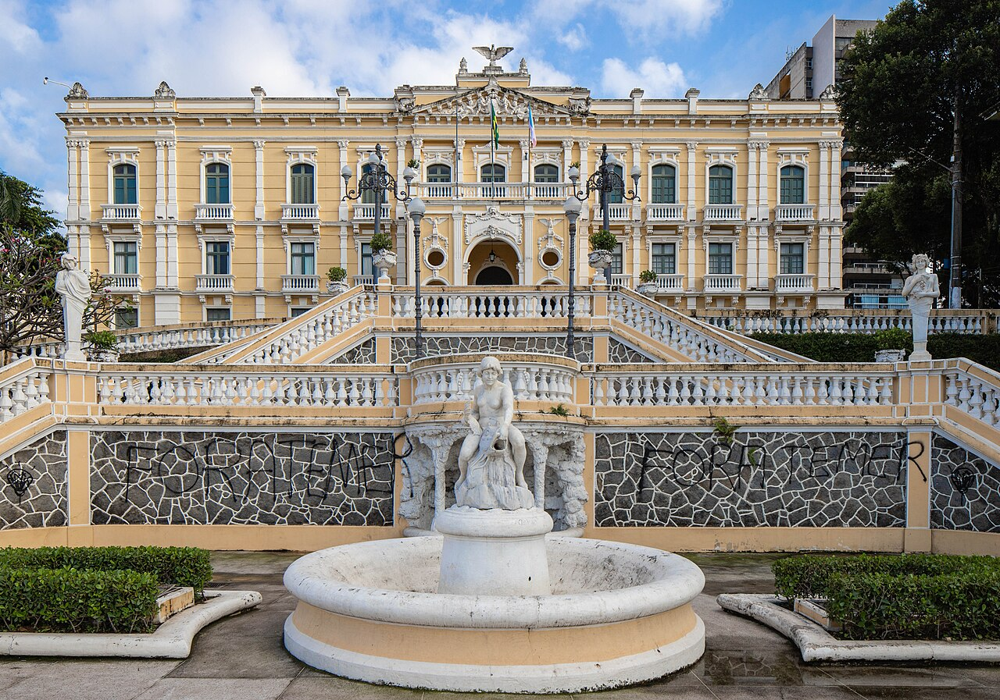

Vitória, a capital do Espírito Santo, é uma ilha encantadora que une modernidade, paisagens praianas e um rico patrimônio histórico. Cercada por manguezais, morros e pela Baía de Vitória, a cidade se destaca pela excelente qualidade de vida, gastronomia marcante e pelo famoso calçadão da Praia de Camburi.

Entre seus diversos atrativos, destaca-se o Palácio Anchieta, uma das sedes de governo mais antigas do Brasil. Localizado no Centro Histórico e construído a partir do século XVI como igreja e colégio jesuíta, o edifício abriga hoje a sede do Poder Executivo estadual, a tumba de São José de Anchieta e um acervo cultural aberto à visitação, oferecendo uma verdadeira viagem pelas origens capixabas.